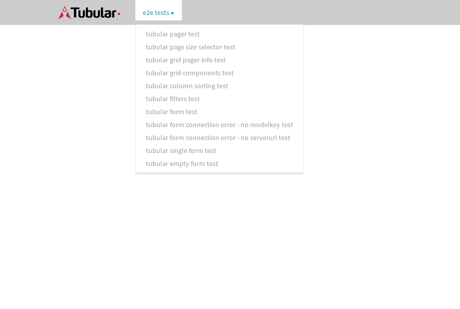
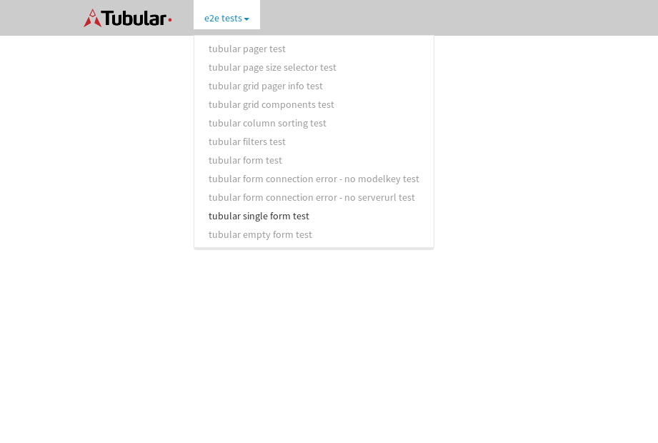

tbColumn.Grid Sorting - 30.901sTests: 5Skipped: 0Failures: 0 should sort data in ascending order then on descending order when sorting by Order Id column - 12.016sTests passed: 100.00%should order data in ascending order when click-sorting an unsorted text column - 4.382sTests passed: 100.00%should order data in descending order when click-sorting an ascending-sorted text column - 5.092sTests passed: 100.00%should order data in ascending order when click-sorting an unsorted date column - 4.421sTests passed: 100.00%should order data in descending order when click-sorting twice an unsorted date column - 4.989sTests passed: 100.00%
tbEmptyForm - 1.94sTests: 3Skipped: 0Failures: 0 should have an empty required field - 0.242sTests passed: 100.00%should not be able to click on save - 0.034sTests passed: 100.00%should load default value for numeric field - 0.033sTests passed: 100.00%
Tubular Filters.tbColumnFilter - 95.129sTests: 12Skipped: 0Failures: 0 should cancel filtering when clicking outside filter-popover - 7.679sTests passed: 100.00%should disable Value text-input for "None" filter - 5.683sTests passed: 100.00%should disable apply button for "None" filter - 5.659sTests passed: 100.00%should decorate popover button when showing data is being filtered for its column - 11.031sTests passed: 100.00%should correctly filter data for the "Equals" filtering option - 7.213sTests passed: 100.00%should correctly filter data for the "Not Equals" filtering option - 7.216sTests passed: 100.00%should correctly filter data for the "Contains" filtering option - 7.579sTests passed: 100.00%should correctly filter data for the "Not Contains" filtering option - 7.642sTests passed: 100.00%should correctly filter data for the "Starts With" filtering option - 5.879sTests passed: 100.00%should correctly filter data for the "Not Starts With" filtering option - 5.902sTests passed: 100.00%should correctly filter data for the "Ends With" filtering option - 6.07sTests passed: 100.00%should correctly filter data for the "Not Ends With" filtering option - 6.127sTests passed: 100.00%
Tubular Filters.tbColumnDateTimeFilter - 124.676sTests: 12Skipped: 0Failures: 0 should cancel filtering when clicking outside filter-popover - 6.233sTests passed: 100.00%should disable Value text-input for "None" filter - 5.46sTests passed: 100.00%should disable apply button for "None" filter - 5.633sTests passed: 100.00%should clear filtering when clicking on Clean button - 16.341sTests passed: 100.00%should decorate popover button when showing data is being filtered for its column - 11.077sTests passed: 100.00%should correctly filter data for the "Equals" filtering option - 6.202sTests passed: 100.00%should correctly filter data for the "Not Equals" filtering option - 6.629sTests passed: 100.00%should correctly filter data for the "Between" filtering option - 11.514sTests passed: 100.00%should correctly filter data for the "Greater-or-equal" filtering option - 11.491sTests passed: 100.00%should correctly filter data for the "Greater" filtering option - 10.954sTests passed: 100.00%should correctly filter data for the "Less-or-equal" filtering option - 10.738sTests passed: 100.00%should correctly filter data for the "Less" filtering option - 11.024sTests passed: 100.00%
Tubular Filters.tbColumnOptionsFilter - 79.079sTests: 3Skipped: 0Failures: 0 should cancel filtering when clicking outside filter-popover - 7.571sTests passed: 100.00%should decorate popover button when showing data is being filtered for its column - 10.938sTests passed: 100.00%should filter column-elements in accordance to the selected filter when selecting a single option - 48.949sTests passed: 100.00%
Tubular Filters.tbTextSearch - 43.875sTests: 5Skipped: 0Failures: 0 min-chars is not set - 0.072sTests passed: 100.00%should filter data in searchable-column customer name to matching inputted text, starting from 3 characters - 5.924sTests passed: 100.00%should filter data in searchable-column shipper city to matching inputted text, starting from 3 characters - 11.053sTests passed: 100.00%should show clear button when there is inputted text only - 5.604sTests passed: 100.00%should clear filtering when clicking clear button - 15.556sTests passed: 100.00%
tbForm related components.tbCheckboxField - 4.735sTests: 2Skipped: 0Failures: 0 should save changes on "SAVE" - 1.873sTests passed: 100.00%should discard changes on "CANCEL" - 1.546sTests passed: 100.00%
tbForm related components.tbDropDownEditor - 6.748sTests: 5Skipped: 0Failures: 0 should set initial input value to the value of "value" attribute when defined - 1.092sTests passed: 100.00%should show the component name value in a label field when "showLabel" attribute is true - 0.77sTests passed: 100.00%should show a help field equal to this attribute, is present - 0.793sTests passed: 100.00%should submit modifications to item/server when clicking form "Save" - 2.224sTests passed: 100.00%should NOT submit modifications to item/server when clicking form "Cancel" - 1.138sTests passed: 100.00%
tbForm related components.tbTextArea - 11.847sTests: 7Skipped: 0Failures: 0 should set initial input value to the value of "value" attribute when defined - 1.046sTests passed: 100.00%should be invalidated when the number of chars is not in the range of "min" and "max" attributes - 1.23sTests passed: 100.00%should show the component name value in a label field when "showLabel" attribute is true - 0.76sTests passed: 100.00%should show a help field equal to this attribute, is present - 1.387sTests passed: 100.00%should require the field when the attribute "required" is true - 1.783sTests passed: 100.00%should submit modifications to item/server when clicking form "Save" - 2.777sTests passed: 100.00%should NOT submit modifications to item/server when clicking form "Cancel" - 1.252sTests passed: 100.00%
tbForm related components.tbDateEditor - 8.094sTests: 6Skipped: 0Failures: 0 should set initial date value to the value of "value" attribute when defined - 0.853sTests passed: 100.00%should be invalidated when the date is not in the range of "min" and "max" attributes - 1.348sTests passed: 100.00%should show the component name value in a label field when "showLabel" attribute is true - 0.78sTests passed: 100.00%should show a help field equal to this attribute, is present - 0.859sTests passed: 100.00%should submit modifications to item/server when clicking form "Save" - 1.726sTests passed: 100.00%should NOT submit modifications to item/server when clicking form "Cancel" - 1.747sTests passed: 100.00%
tbForm related components.tbTypeaheadEditor - 11.746sTests: 7Skipped: 0Failures: 0 should show an options list when there is an API-info/component entered-data - 1.469sTests passed: 100.00%should select the option clicked - 1.583sTests passed: 100.00%should show a "delete" button when an option/match is selected, and delete the option if button is clicked - 1.596sTests passed: 100.00%should show a label value equal to the component name when "showLabel" attribute is true - 1.007sTests passed: 100.00%should require a value when "require" attribute is true - 1.474sTests passed: 100.00%should submit modifications to item/server when clicking form "Save" - 2.339sTests passed: 100.00%should NOT submit modifications to item/server when clicking form "Cancel" - 1.38sTests passed: 100.00%
tbForm related components.tbSimpleEditor - 10.489sTests: 9Skipped: 0Failures: 0 should set initial input value to the value of "value" attribute when defined - 0.731sTests passed: 100.00%should be invalidated when the number of chars is not in the range of "min" and "max" attributes - 1.12sTests passed: 100.00%should show the component name value in a label field when "showLabel" attribute is true - 0.749sTests passed: 100.00%should set input placeholder to the value of "placeholder" attribute - 0.905sTests passed: 100.00%should validate the control using the "regex" attribute, if present - 0.978sTests passed: 100.00%should show a help field equal to this attribute, is present - 0.847sTests passed: 100.00%should require the field when the attribute "required" is true - 1.103sTests passed: 100.00%should submit modifications to item/server when clicking form "Save" - 2.334sTests passed: 100.00%should NOT submit modifications to item/server when clicking form "Cancel" - 1.055sTests passed: 100.00%
tbForm related components.tbNumericEditor - 9.785sTests: 7Skipped: 0Failures: 0 should set initial component value to the value of "value" attribute when defined - 0.7sTests passed: 100.00%should be invalidated when the entered number is not in the range of "min" and "max" attributes - 1.627sTests passed: 100.00%should show the component name value in a label field when "showLabel" attribute is true - 0.885sTests passed: 100.00%should show a help field equal to this attribute, is present - 0.848sTests passed: 100.00%should require the field when the attribute "required" is true - 0.937sTests passed: 100.00%should submit modifications to item/server when clicking form "Save" - 2.481sTests passed: 100.00%should NOT submit modifications to item/server when clicking form "Cancel" - 1.615sTests passed: 100.00%
tbForm Connection Error NoModelKey - 1.876sTests: 1Skipped: 0Failures: 0 tbForm connection error functionality - 0.006sTests passed: 100.00%
tbForm Connection Error NoServerUrl - 1.773sTests: 1Skipped: 0Failures: 0 tbForm connection error functionality - 0.002sTests passed: 100.00%
tbGridComponents - 7.298sTests: 6Skipped: 0Failures: 0 should add item with newRow method - 2.6sTests passed: 100.00%should add item with newRow method and cancel action - 0.519sTests passed: 100.00%should update item with tbSaveButton - 1.072sTests passed: 100.00%should NOT update item on cancel Update action - 0.46sTests passed: 100.00%should remove item with tbRemoveButton - 0.83sTests passed: 100.00%should NOT remove item on cancel Remove action - 0.427sTests passed: 100.00%
tbGridPager.navigation buttons - 3.335sTests: 1Skipped: 0Failures: 0 should perform no action when clicking on the numbered navigation button corresponding to the current-showing results page - 0.642sTests passed: 100.00%
tbGridPager.navigation buttons.first/non-last results page related functionality - 0.878sTests: 2Skipped: 0Failures: 0 should disable "first" and "previous" navigation buttons when in first results page - 0.15sTests passed: 100.00%should enable "last" and "next" navigation buttons when in a results page other than last - 0.728sTests passed: 100.00%
tbGridPager.navigation buttons.last/non-first results page related functionality - 1.814sTests: 2Skipped: 0Failures: 0 should disable "last" and "next" navigation buttons when in last results page - 1.187sTests passed: 100.00%should enable "first" and "previous" navigation buttons when in a results page other than first - 0.627sTests passed: 100.00%
tbGridPager.page navigation - 4.403sTests: 5Skipped: 0Failures: 0 should go to next results page when clicking on next navigation button - 1.603sTests passed: 100.00%should go to previous results page when clicking on previous navigation button - 1.074sTests passed: 100.00%should go to last results page when clicking on last navigation button - 0.592sTests passed: 100.00%should go to first results page when clicking on first navigation button - 0.589sTests passed: 100.00%should go to corresponding results page when clicking on a numbered navigation button - 0.545sTests passed: 100.00%
tbGridPagerInfo - 4.679sTests: 2Skipped: 0Failures: 0 should show text in accordance to numbered of filter rows and current results-page - 2.109sTests passed: 100.00%should show count in footer - 0.035sTests passed: 100.00%
tbPageSizeSelctor - 13.228sTests: 4Skipped: 0Failures: 0 should filter up to 10 data rows per page when selecting a page size of "10" - 2.678sTests passed: 100.00%should filter up to 20 data rows per page when selecting a page size of "20" - 2.297sTests passed: 100.00%should filter up to 50 data rows per page when selecting a page size of "50" - 3.207sTests passed: 100.00%should filter up to 100 data rows per page when selecting a page size of "100" - 3.543sTests passed: 100.00%
tbRowSelectable - 1.517sTests: 2Skipped: 0Failures: 2 selected rows - 0.044sFailed: No element found using locator: By(css selector, *[id="tbRowSelectable"])✗Failed: No element found using locator: By(css selector, *[id="btnRows"])✗Tests passed: 0.00%unselected rows - 0.068sFailed: No element found using locator: By(css selector, *[id="tbRowSelectable"])✗Failed: No element found using locator: By(css selector, *[id="btnRows"])✗Tests passed: 0.00%
tbSingleForm - 14.737sTests: 8Skipped: 1Failures: 0 should load correct info - 0.001s***Skipped***Tests passed: 0%should change customer name - 1.846sTests passed: 100.00%should save it - 2.266sTests passed: 100.00%should clear the inputs - 2.815sTests passed: 100.00%should update - 1.93sTests passed: 100.00%should reset editor - 1.826sTests passed: 100.00%should not save if not Changes - 2.236sTests passed: 100.00%should not be able to click on save - 1.817sTests passed: 100.00%
{kind=link}
{kind=link}